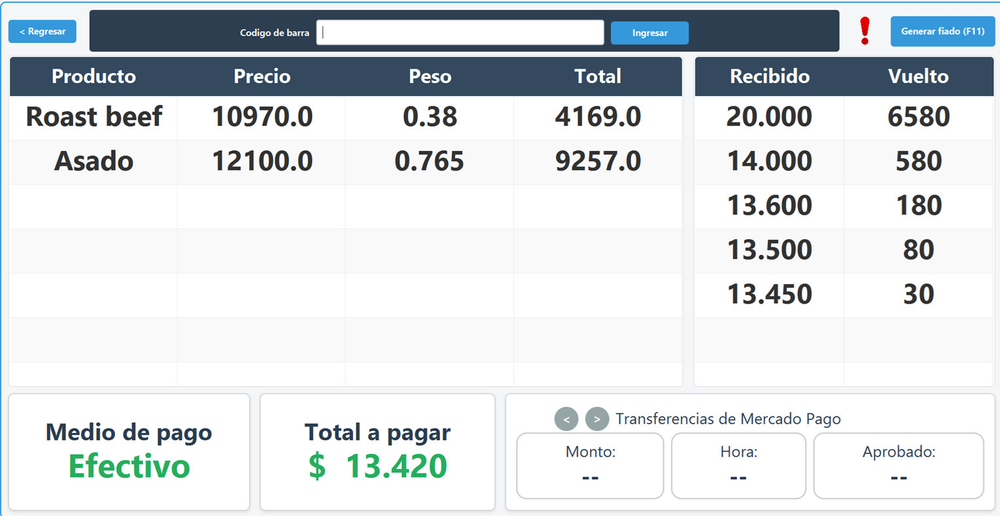
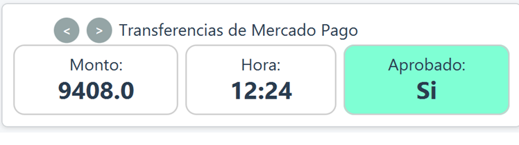

Portafolio de Facundo Garnica
Bienvenidos, soy Facundo Garnica, analista programador con foco en el análisis de datos y el desarrollo de software. Trabajo con Java y PHP, utilizando frameworks modernos como Symfony, Spring Boot y Angular para crear soluciones eficientes, escalables y orientadas a resultados.
Mis proyectos
Sistema de gestión de carnicería
Sistema para uso comercial, incluye módulos tales como:
Agregar productos:
Permite registrar productos con código, peso, categoría y precio de manera sencilla.
Consultar stock:
Módulo para verificar el stock actual, controlar mínimos y evitar quiebres.
Punto de venta:
Sistema de ventas con selección de productos, medios de pago y cálculo automático del total y vuelto a dar.

Integración con MercadoPago:
Consulta en tiempo real de las últimas 10 transferencias recibidas a travez de una key.

Gestión de clientes:
Permite registrar clientes, manejar cuentas corrientes y generar pedidos con fecha de entrega.
Proyecto en github:
Ver repositorio en GitHub
Desarrollo módulo Sugist
Desarrollo de un módulo de asistencias que incluye:
Vista de docentes y alumnos:
Muestra los docentes asignados y los estudiantes a su cargo.
Control de asistencias:
Registro detallado de las clases dictadas y los presentes en cada una.
Reportes de porcentajes:
Generación de estadísticas de asistencia a lo largo de la carrera.
Modo administrador:
Los usuarios con rol administrador pueden modificar y gestionar registros de asistencia.
Proyecto en github:
Ver repositorio en GitHub
Proyecto E-Commerce: Mercado-Mago
Desarrollo de plataforma marketplace con arquitectura RESTful, orientada a la compra y venta de productos.
Autenticación y autorización de usuarios:
Implementación de registro, login seguro y control de accesos según roles.
Gestión de productos, publicaciones y carrito de compras:
Administración completa de productos, posibilidad de publicar ofertas y sistema de carrito dinámico.
Desarrollo en Angular:
Creación de componentes reutilizables para mejorar la escalabilidad y mantenibilidad del proyecto.
Backend con Spring Boot:
Optimización de consultas y endpoints RESTful para garantizar un alto rendimiento.
Metodologías ágiles y full stack:
Aplicación de prácticas reales de trabajo en equipo y desarrollo ágil, integrando frontend y backend.
Ver repositorio en GitHub